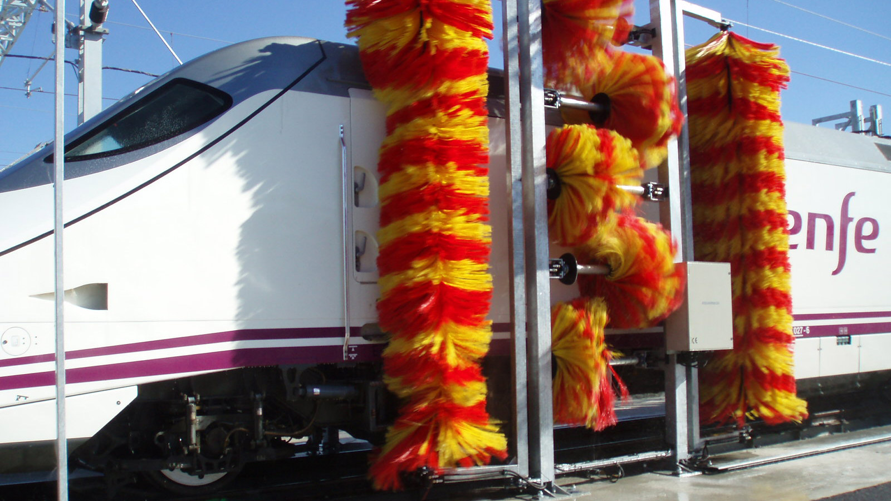

Lavado de Trenes
Beneficios:
- Más limpio para el Tren
- Ahorra tiempo y energía en solo 30 minutos.
- Prevención de óxido en el Tren
- Amigable y a prueba de mantenimiento
- Facilidad de pago y uso
- Proyecto de Nueva Idea
- Mantener y Proteger el Tren
Datos Técnicos
| No. | Descripciones de Funciones | Detalles de la Marca | Observaciones |
|---|---|---|---|
| (1) | El equipo de limpieza de trenes utiliza principalmente cañones de agua de alta presión a larga distancia y sistemas de agua de alta presión a corta distancia. | Bomba de agua a alta presión La parte del rotor de la bomba está soportada consistentemente por rodamiento de rodillos en ambos extremos |
Alemania pinfl |
| (2) | Para lavar toda la superficie de aeronaves grandes y medianas (incluyendo fuselaje, alas de avión y manchas de aceite de cola de avión). | La bomba funciona suavemente | Japón NSK |
| (3) | Para eliminar manchas de aceite y polvo. | Esta bomba de 5 salidas es una bomba vertical de un solo paso, | Alemania FUCHS |
| (4) | Función de detección roja y ultravioleta, seguimiento y posicionamiento automático, detección automática las 24 horas. | La entrada de la bomba está en dirección horizontal y la salida está dispuesta verticalmente hacia arriba para simplificar la tubería. | Francia schneider |
| (5) | El Tren ingresa al área de limpieza, el sistema de cañones de agua se enciende automáticamente, Escaneo desde | El motor de la bomba es de estructura horizontal, fácil mantenimiento | |
| (6) | Direcciones de orientación horizontal, vertical, inclinada. | Diferentes tasas de flujo y alturas de elevación | Taiwán Delta |
| (7) | El controlador central emite instrucciones, luego se inician las bombas y se abren las válvulas | Después de completar la limpieza, el controlador central enviará instrucciones para detener la eyaculación | Dimensiones de la máquina ESPACIO DE INSTALACIÓN ESTACIÓN DE SUMINISTRO Potencia principal Potencia total Presión del agua |
| (8) | A. El Tren ingresa al área de limpieza B. El dispositivo se auto-siente para comenzar |
A. Limpieza con cañones de agua a alta presión | Procedimientos de limpieza |
| (9) | A. Mezclar el detergente de limpieza B. Rociar el detergente de limpieza |
B. Limpieza con agua a alta presión | |
| (10) | A. Descomposición y B. Descontaminación |
Conducir fuera del área de limpieza, la limpieza ha terminado |